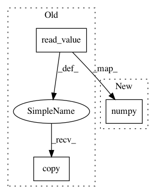

8c65ef658930afecb7001ce671f15772a0a4b23b,doc/source/notebooks/theory/FITCvsVFE.py,,trainSparseModel,#,104
Before Change
def trainSparseModel(Xtrain, Ytrain, exact_model, isFITC, Xtest, Ytest):
sparse_model = getSparseModel(Xtrain, Ytrain, isFITC)
sparse_model.likelihood.variance = exact_model.likelihood.variance.read_value().copy()
sparse_model.kern.lengthscales = exact_model.kern.lengthscales.read_value().copy()
sparse_model.kern.variance = exact_model.kern.variance.read_value().copy()
return sparse_model, repeatMinimization(sparse_model, Xtest, Ytest)
After Change
def trainSparseModel(Xtrain, Ytrain, exact_model, isFITC, Xtest, Ytest):
sparse_model = getSparseModel(Xtrain, Ytrain, isFITC)
sparse_model.likelihood.variance = exact_model.likelihood.variance.numpy()
sparse_model.kern.lengthscales = exact_model.kern.lengthscales.numpy()
sparse_model.kern.variance = exact_model.kern.variance.numpy()
return sparse_model, repeatMinimization(sparse_model, Xtest, Ytest)
In pattern: SUPERPATTERN
Frequency: 6
Non-data size: 3
Instances
Project Name: GPflow/GPflow
Commit Name: 8c65ef658930afecb7001ce671f15772a0a4b23b
Time: 2020-08-17
Author: art.art.v@gmail.com
File Name: doc/source/notebooks/theory/FITCvsVFE.py
Class Name:
Method Name: trainSparseModel
Project Name: GPflow/GPflow
Commit Name: f3c511060ce62072a34a50319237d28b82d10448
Time: 2020-08-27
Author: dutordoirv@gmail.com
File Name: doc/source/notebooks/theory/FITCvsVFE.py
Class Name:
Method Name: trainSparseModel